Biohab Bioreactor
NASA Deep Space Food Challenge · sponsored by MOOG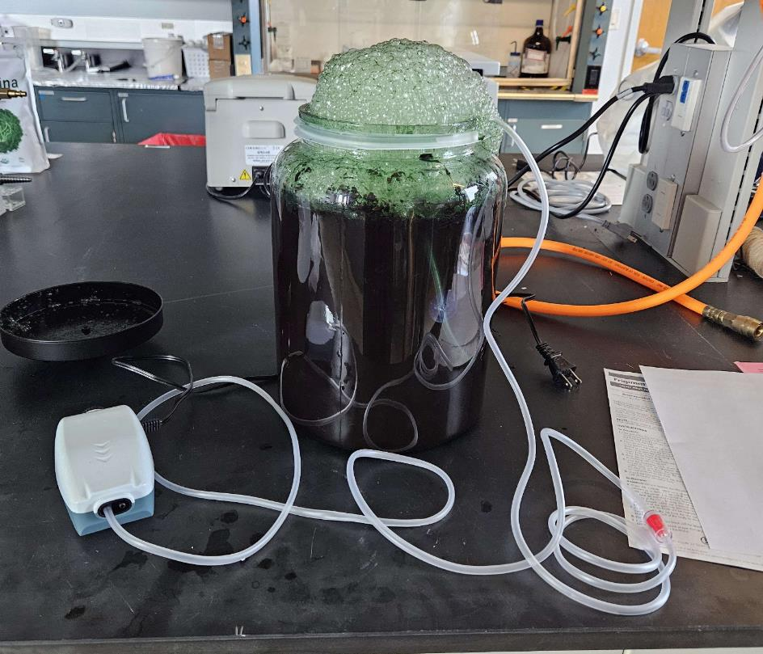
Grow-light frame in service, spirulina under culture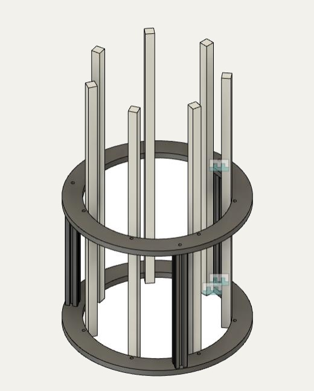
Grow-light frame — CADRIT's Space Exploration Club entered the NASA Deep Space Food Challenge with a bioreactor that grows spirulina, a dense algae with simple growth requirements, as a food source for long missions. It had to produce 20 g of dry mass and hold its growth conditions steady while doing it.
On a five-person team I designed the grow-light frame that carries the LED array around the vessel, and the pH sensor mount that was machined from my drawings. I characterised the thermal behaviour on the bench with a thermoelectric plate and checked the result against a MATLAB model, and ran component purchasing against the budget and the lead times.
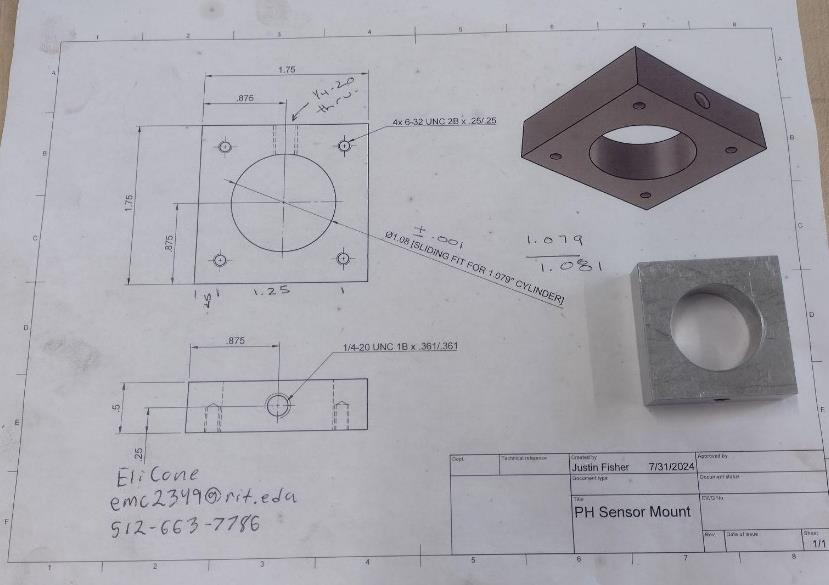
pH sensor mount — drawing and parts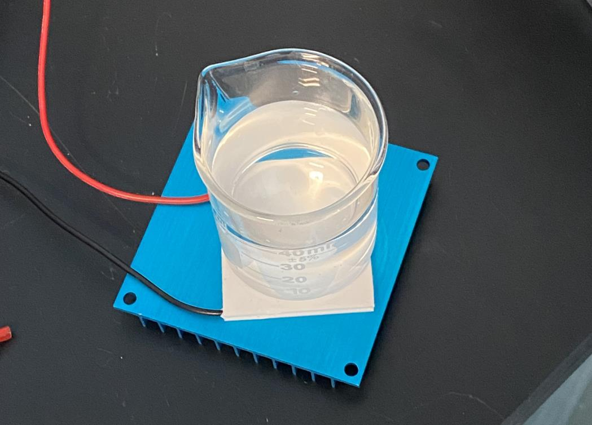
Thermoelectric bench testAdaptive Prosthetic Hand
Body-powered · designed for low-cost fabricationA body-powered hand that spreads tendon tension across all four fingers through a Whippletree linkage, so the grip closes around whatever shape it meets instead of forcing every finger to the same position.
The mechanism went through 23 revisions. Each one got printed and pulled by hand until the linkage geometry and the joint tolerances held up under load. Fusion Simulation on joint stress set the wall thicknesses where the fingers were failing. The whole thing was designed around FDM printing, so it can be made cheaply and close to whoever needs it.
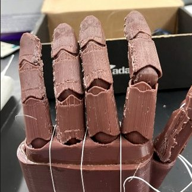
Printed assembly, tendon routingTube Cutting Fixture
ArcWorks · medical device client, ISO 7 cleanroom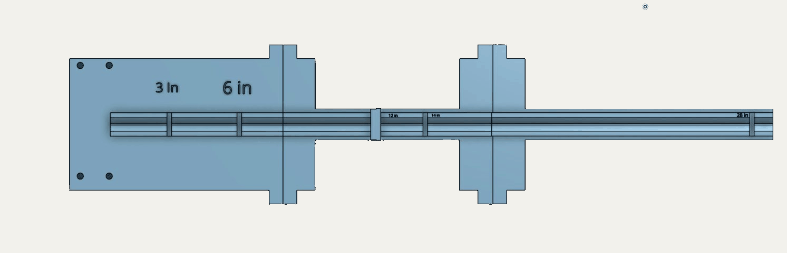
Plan — blade slots at the set cut lengthsSilicone tubing for Thermo Fisher had to be cut to five fixed lengths by hand, repeatably, inside an ISO 7 cleanroom. Measuring and marking each piece was slow, and it drifted.
A V-groove channel seats the tube in the same position every time, and slotted walls at 3, 6, 12, 14 and 28 in guide the blade straight through. No measuring, no marking, no judgement call. It went into daily use on the floor.
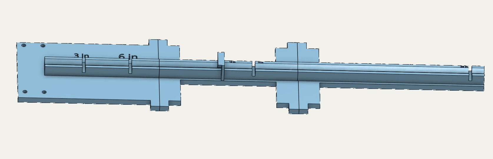
Side elevation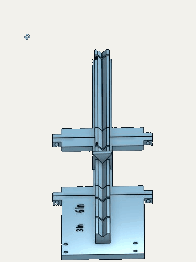
End view — V-grooveBag Sealing Tool
ArcWorks · packaging line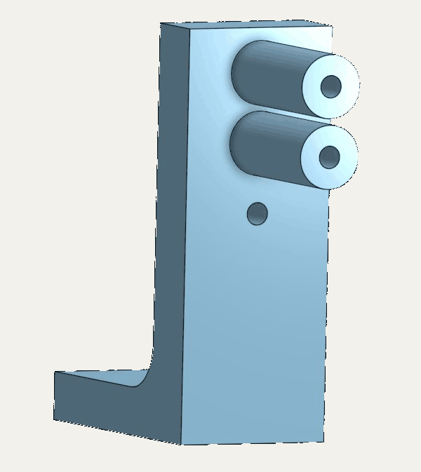
Two free-rotating rollers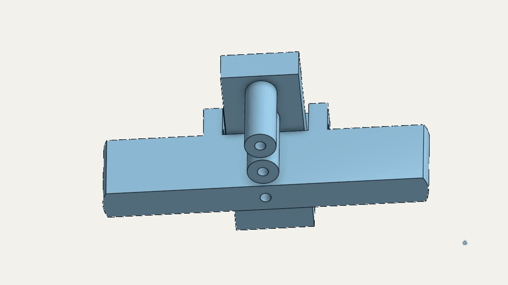
Extension for larger formatsOperators were closing ziplock bags by hand all day, which is slow, inconsistent and hard on the hands. Two hollow rollers on shoulder screws let the bag pull through and seal in a single motion.
The screw holes are deliberately oversized so the gap can be set for different bag thicknesses, and a separate attachment extends the tool for larger formats. I made several for the floor.
Wire Spooler
ArcWorks · built around a spent paper towel roll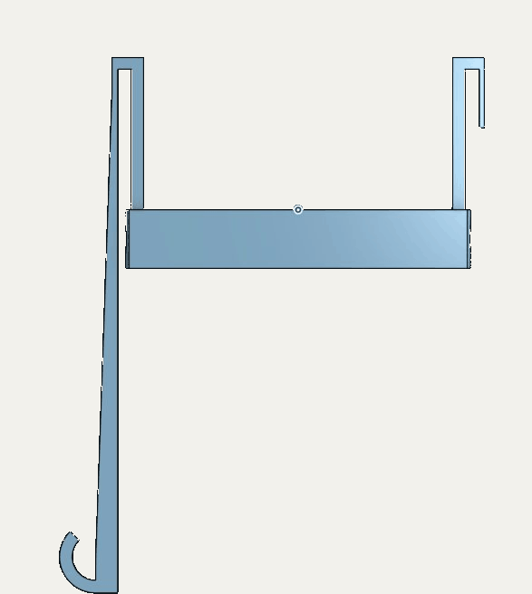
Frame, mandrel, edge clips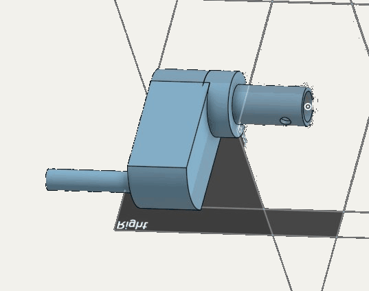
Crank, set-screw socketRather than buying spool hardware, this turns a spent paper towel roll into one. An internal mandrel presses against the inside of the cardboard tube to lock it to the axle, external clips stop the roll walking sideways, and an L-crank with a set-screw socket drives it by hand.
Four printed parts and a consumable that was already going in the bin.
Bottle Stand with Spill Containment
ArcWorks · self-initiated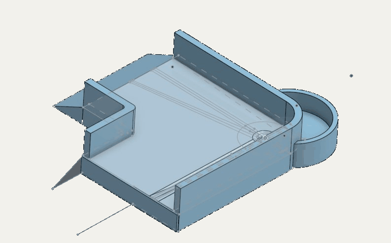
Tray, cradle, central drain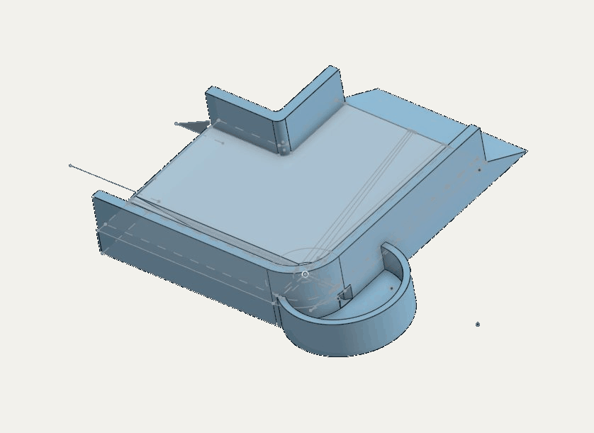
Angled slideLiquid beading on the outside of bottles was transferring to operators' hands every time one got picked up. Nobody asked for a fix. It was just a thing that kept happening.
A raised tray catches what runs off, a central drain moves it away from the work surface, and an angled slide lets the bottle be set down and lifted without gripping the wet part.
Acoustic Pipe Material Classifier
Independent R&D · in developmentUtilities are required to find and replace lead water service lines, and the standard way to learn what a buried pipe is made of is to dig it up. That is expensive, and most of the holes come back copper.
This measures it instead. A piezoelectric disc drives a pulse into the pipe wall at the one access point the replacement workflow already opens, and the return timing separates lead from copper by the difference in wave speed through the two materials. I validated the physics against theory before building anything, checked the competitive landscape, and built the signal chain. Bench testing is underway and a provisional patent filing is in progress.